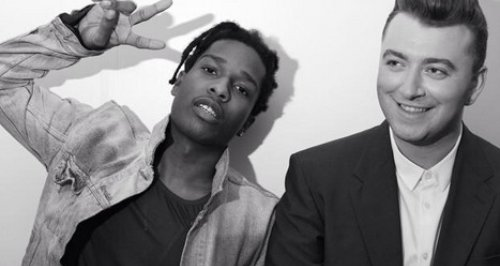

Sam Smith ft. A$AP Rocky
I'm Not The Only One
收錄於In The Lonely Hour專輯裡，此張專輯是Sam Smith最暢銷的專輯之一。SamSmith: ⌜我認為你寂寞時可以聽這張專輯，所以我取名為’寂寞時刻’⌟。此歌是在表達對於一段愛情，即使知道了對方心裡，你不再是唯一的，卻又無法將對方割捨的心情。為Soul結合Gospel的音樂類型。就如MV裡，夫妻中的Dianna Agron，知道了丈夫出門時即使親吻了自己卻明明是要去找新歡，再痛哭了一場後，丈夫歸來裝作甚麼事也沒發生，因為自己已無法將這份愛放下了。
▲Original Verse
此歌因當時太過熱門，受到當時全球歌迷的喜愛，Sam Smith更決定以單曲發行，提到: ⌜我只是想播放一首經典的歌曲，並且具有長久的意義。如果您聽這張唱片，那兒確實有幾首歌曲，我認為從廣播的角度來看，這是比較安全的選擇，但是我想發表一個聲明，我也想讓人們知道，我不僅是為了在電台大受歡迎而這樣做，我還希望人們購買專輯。⌟歌曲在31 August 2014為首發，10 September 2014，美國說唱歌手A $ AP Rocky演唱的歌曲的混音版通過在線音樂商店在全球發行。Smith回憶說Zane Lowe打電話給他們，並在他們的電話上留下語音郵件，告訴他們這首歌是嘻哈音樂，他需要在上面說唱歌手，並啟發他們獲得說唱歌手並展現音樂的另一面。
▲Sam & A$AP
個人認為首發版本是屬於可以一直重複撥放的，聽的過程中會獨自的省思自己的情緒，可以感覺的到是屬於悲傷的情緒，尤其是’Cause you don't think I know what you've done’更顯其無奈心痛的;而Rap版本，因為會有韻腳的問題，可能歌詞中有時會有比較無法一聽就了解的感覺，但細細品嘗就會發現更能了解其中的意思，’But you handle the pressure, Jack Daniels for breakfast.A cap of valium mixed with antidepressants, precious’是最能表現的，可以發現中歌詞中的一些小趣味，更能融入生活。
而目前網路上尚未出現feat. A $ AP Rocky版本的中文版歌詞，是我自己翻譯的，而且可能美國人西方文化我可能不是太了解，所以可能文義會有稍稍不太順暢，還請各位見諒。
▲A$AP Rocky
LYRICS
[Verse 1:A$AP Rocky] A new disease in my town called Idiotic 城裡流行一種病”為愛痴狂” Every pretty lady in my city got it,point blank 每位漂亮的女人都得了 Periodically empty seats, dine at Cipriani's 她們時常獨自一人在Cipriani裡用餐 Like Beyoncé, they're getting by or they get embodied 雖然像Beyoncé積極主動強勢 So Sasha Fierce, a whole lot of tears 最後卻傷心欲絕 Rolling down her cheeks, crying till she's sound asleep 淚水從她臉頰滑下，直到她已沙啞 Preach, pray that today is not a lonely one 祈禱著今天不會再是一個人 You gotta know you not the only one 但你必須知道有其他人了 [Verse 2: Sam Smith] You and me, we made a vow 你和我，曾宣讀過誓詞 For better or for worse 無論將來順境或逆境，都會在一起 I can't believe you let me down 我不敢相信你卻傷了我 But the proof is in the way it hurts 但事實證明它讓我傷痛不已 For months on end I've had my doubts 數月以來我一直質疑自己 Denying every tear 拒絕面對現實 I wish this would be over now 我希望這一切都可以結束了 But I know that I still need you here 但我知道，我還是需要你 [Chorus: Sam Smith] You say I'm crazy 你說我像發瘋似的 Cause you don't think I know what you've done 那是因為你不知道我發現了些甚麼 But when you call me baby 每當你叫我寶貝時 I know I'm not the only one 我早就知道我不是唯一了 [Verse 3: Sam Smith] You've been so unavailable 你已不可靠了 Now sadly I know why 我知道為何如此難過了 Your heart is unobtainable 你的心已不在我這了 Even though Lord knows you kept mine 儘管上帝認為你屬於我 [Chorus: Sam Smith] You say I'm crazy 你說我像發瘋似的 Cause you don't think I know what you've done 那是因為你不知道我發現了些甚麼 But when you call me baby 每當你叫我寶貝時 I know I'm not the only one 我早就知道我不是唯一的 [Verse 4/Bridge: A$AP Rocky] We all guilty of the same crime 我們都為了同樣的錯感到有罪 If you ask me, I might've had a couple women at the same time 如果要問，我肯定會劈腿 But you handle the pressure, Jack Daniels for breakfast 但你總用威士忌來處理壓力 A cap of valium mixed with antidepressants, precious 迷幻藥混著憂鬱藥 My momma said that we need love 我媽早說了我們沒有愛 Till I found out life's a bitch with no prenup, you're on your own 直到我發現我們像沒結過婚，各過各的 Divorces or court splits, decisions and choices 是不是直接簽離婚就好了 The Porsche or the fortress? Ignore it or forefeit 車子還是房子?自己決定吧 [Chorus: Sam Smith] You say I'm crazy 你說我像發瘋似的 Cause you don't think I know what you've done 那是因為你不知道我發現了些甚麼 But when you call me baby 每當你叫我寶貝時 I know I'm not the only one 我早就知道我不是唯一的 I know I'm not the only one 我早就知道我不是唯一的 I know I'm not the only one 我早就知道我不是唯一的 And I know and I know and I know and I know and I know 而我知道… I know I'm not the only one 我知道我不是唯一的
無關緊要小訊息
- Brandon Flynn(飾演13 Reasons Why裡的Justin Foley)是Sam Smith的其中一任男友，然後我覺得他很帥，但可惜的是最後分手了。。。。。
- In The Lonely Hour是當時Sam Smith因為喜歡一個男生(同志V.S.直男)，但對方卻對於自己的一些小貼心或情感完全無動於衷之時所寫的，其中許多歌曲更都是親身經歷的傷心故事。
- Sam Smith在2014年的5月大方出櫃，坦承自己喜歡男生。而曾經也提到過不喜歡別人稱他為He，希望大家能說They，也就是LGBTQ的Q(Queer酷兒)